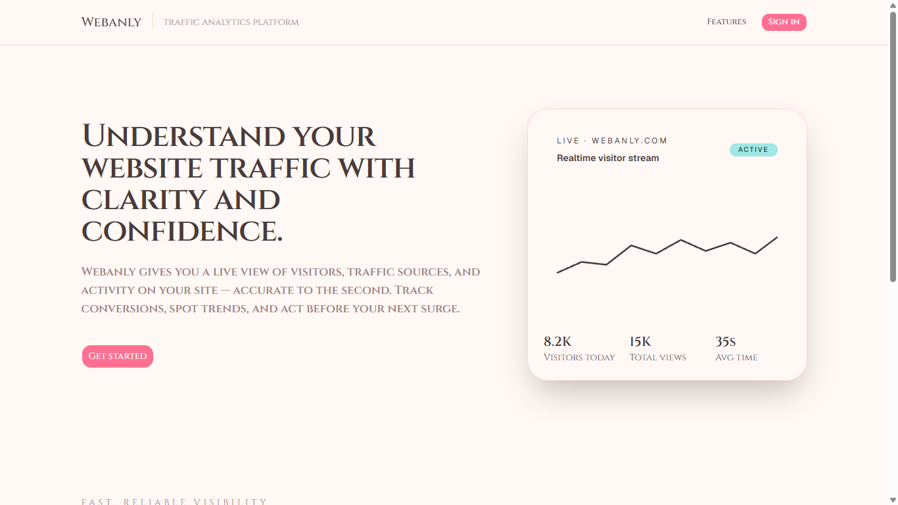
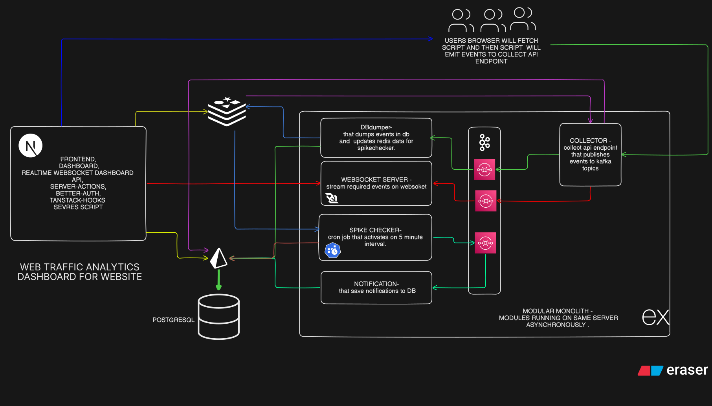
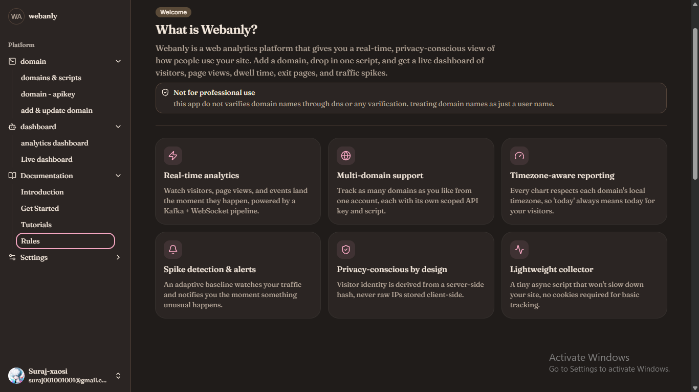
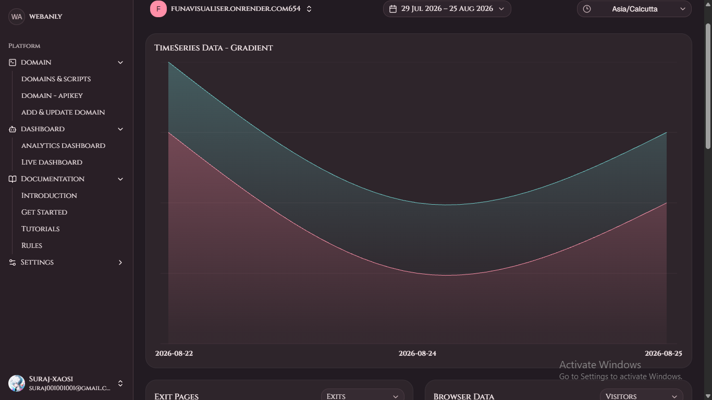
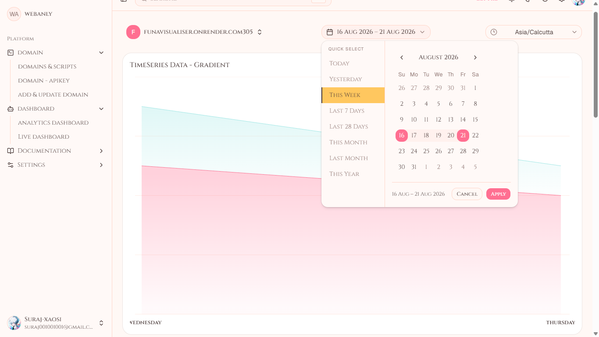
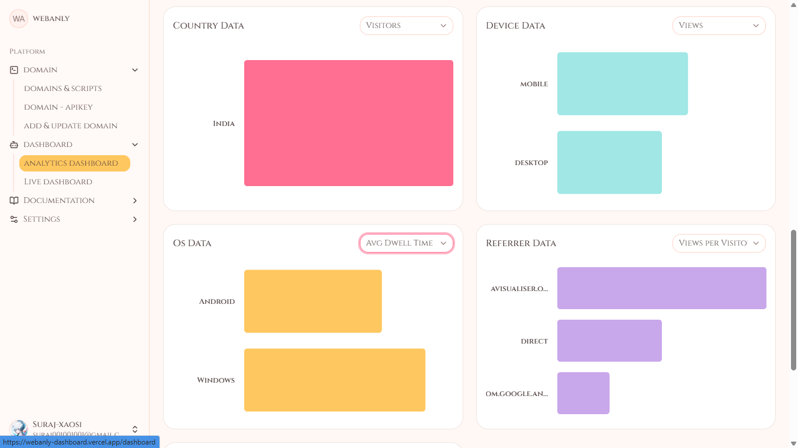

Featured Project · 01
Analytics Dashboard
A powerful analytics dashboard for tracking key metrics and performance in real time, designed for fast decisions and clear operational visibility.

The challenge
Teams need a single place to understand what is happening across their product. The dashboard brings high-volume metrics into a focused interface where trends, performance, and key changes can be scanned quickly.
What I built
- Responsive dashboard views for core business metrics.
- Data-fetching and caching patterns for responsive charts.
- Backend services prepared for streaming and asynchronous workloads.
System direction

Project visuals



